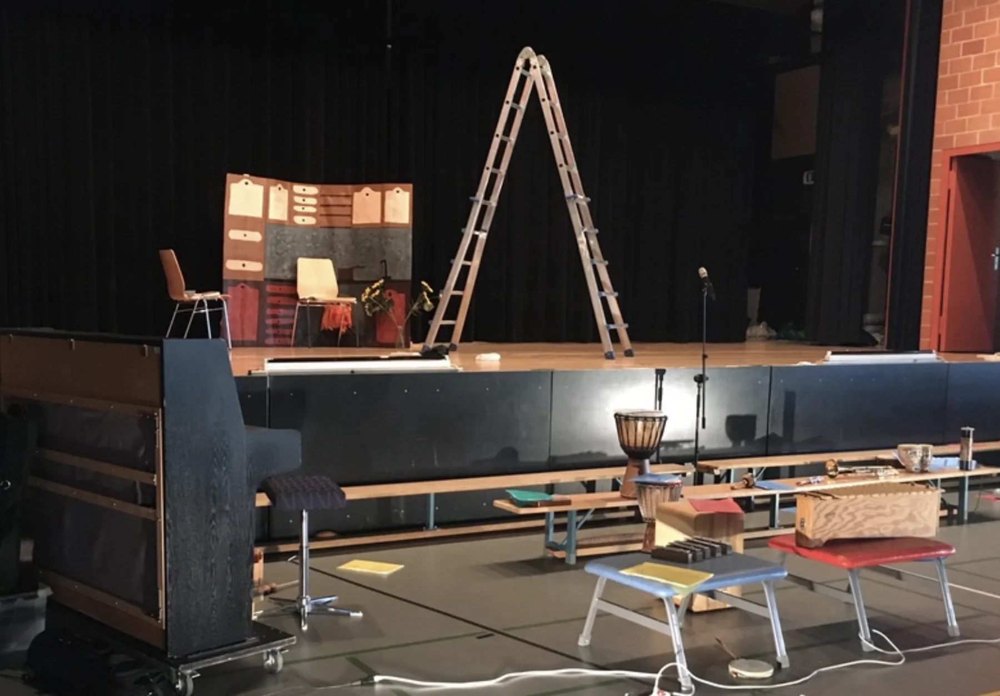
Krempeln wir den Krempel doch mal um
3. Klasse · Zürich
Theaterpädagogin & Autorin
Zürich ↔ WienGemeinsam forschen.
Geschichten erfinden.
Neue Spielräume öffnen.
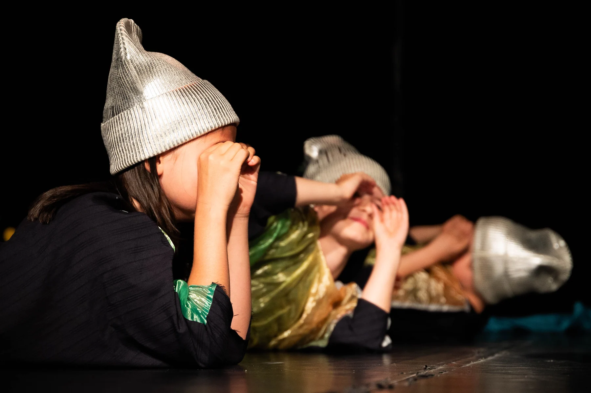
Meine Arbeit
Mit Kindern, Jugendlichen und Erwachsenen. In Schulen, auf Bühnen und überall dazwischen.
13 Projekte angezeigt

3. Klasse · Zürich
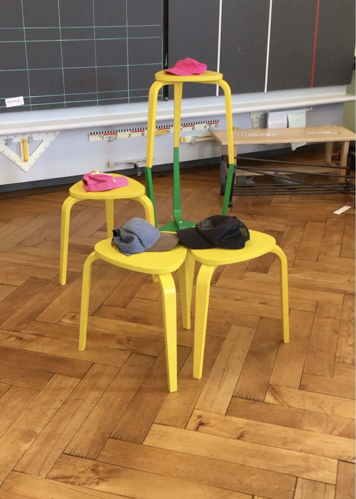
Masterprojekt · Primarschule Wollishofen
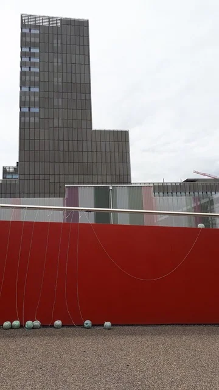
Bundesasylzentrum BAZ · Zürich
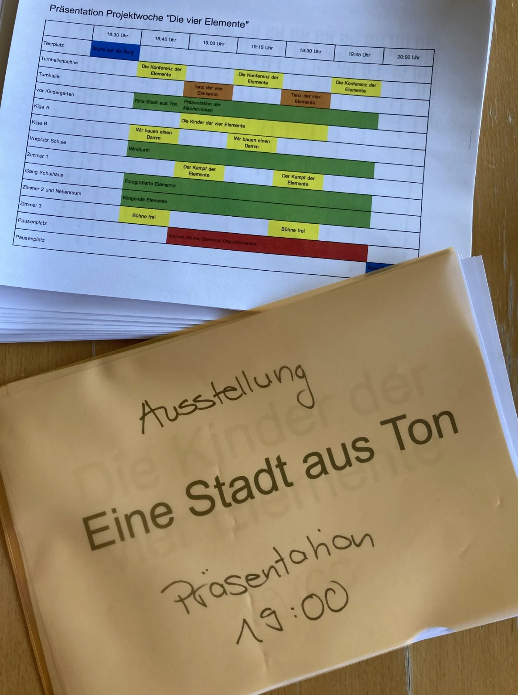
Projektwoche · Primarschule Flaachtal

Primarschule Buchwiesen · Theater PurPur · Zürich
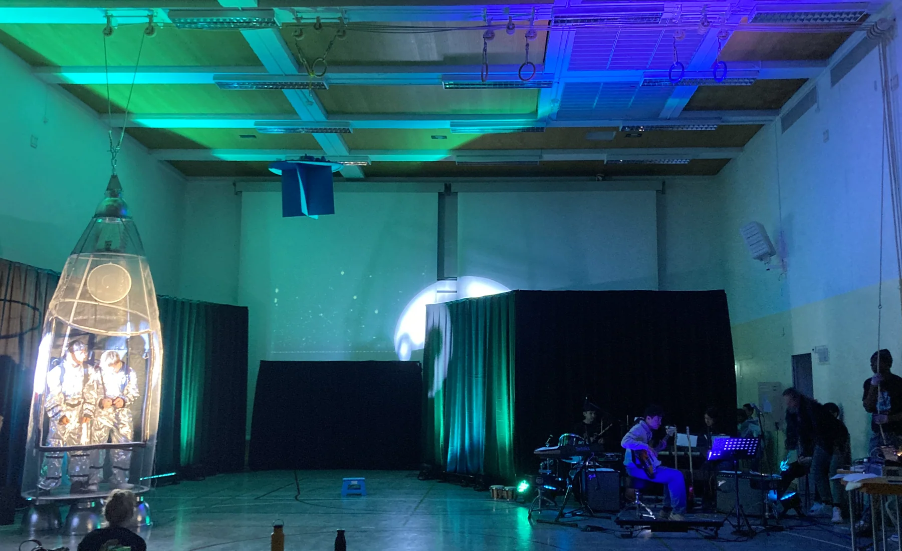
Schulprojekt · Sekundarschule Zürich
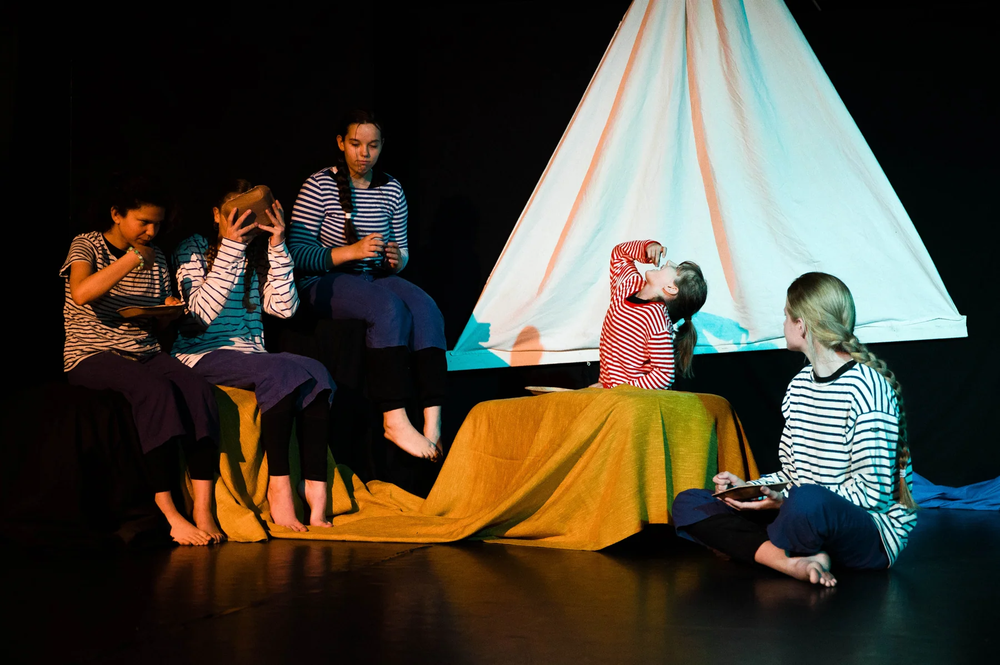
Youngsters · Bühnerei Winterthur
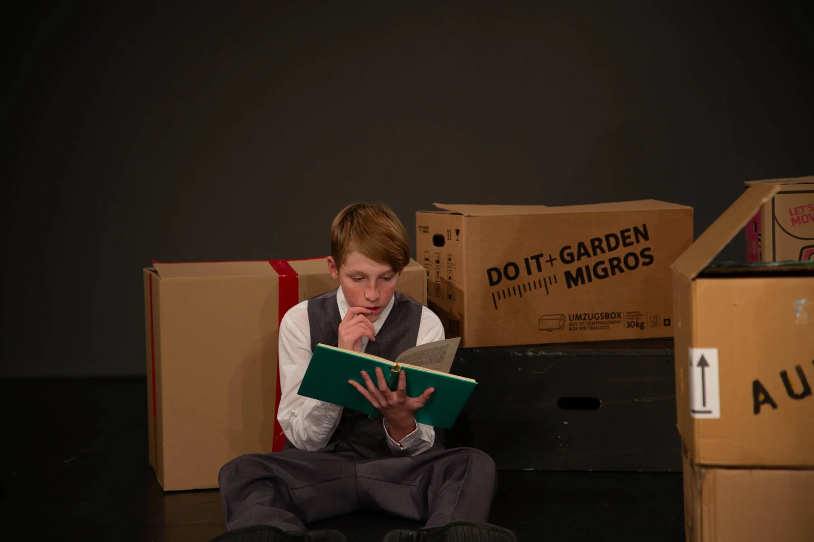
Theaterratten · Kinder- und Jugendtheater Zug
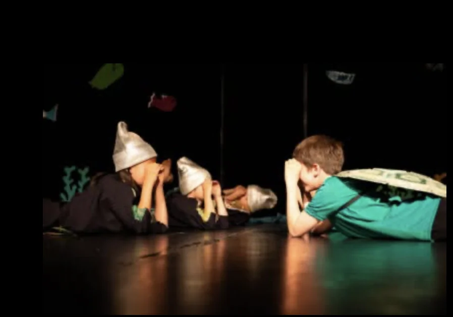
Kids · Bühnerei Winterthur
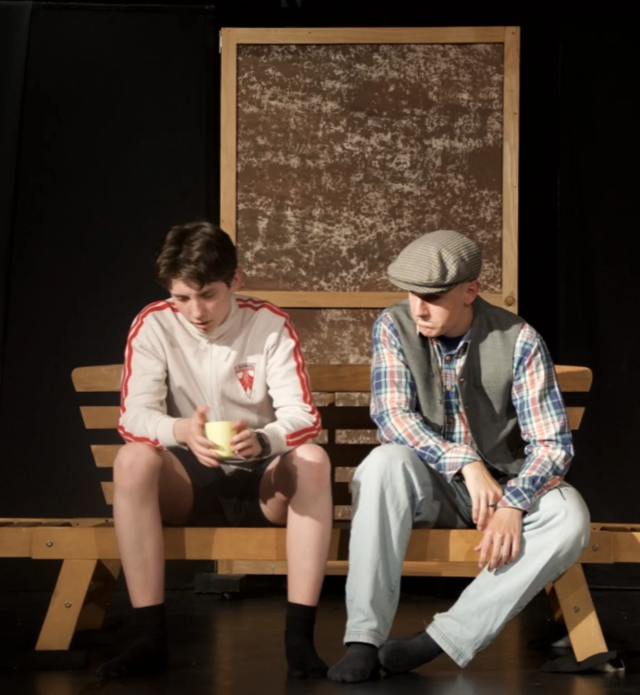
Ensemble · Bühnerei Winterthur

Evangelische Kirchgemeinde Kreuzlingen
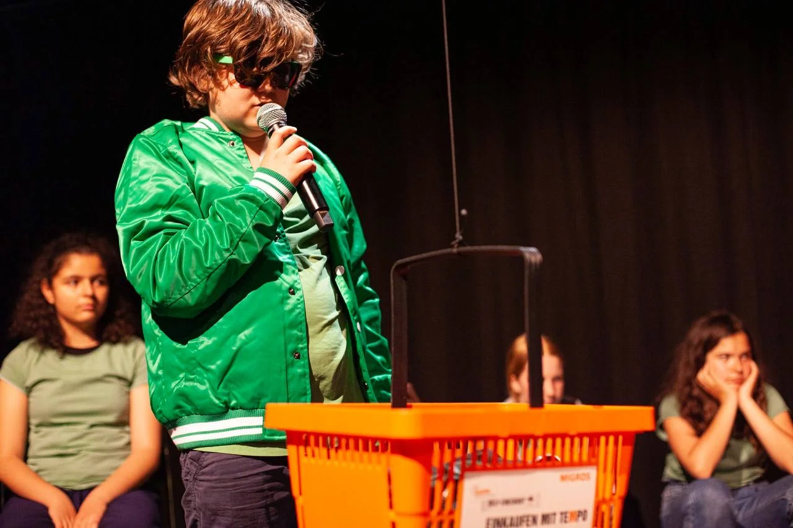
Spielclub U12 · Bühne Aarau
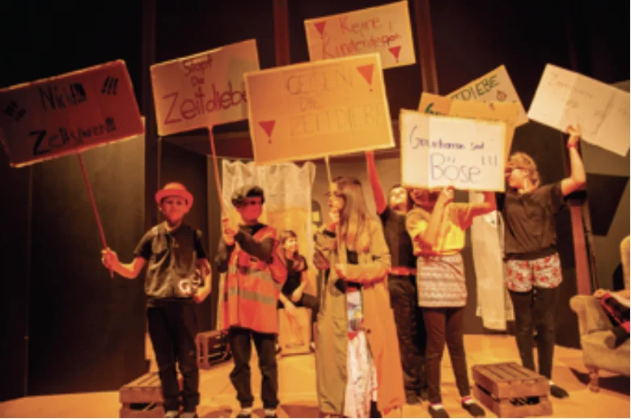
Schulprojekt · 5. Klasse · Zürich
Die Schule als Lernort sozialer Kompetenzen
Wie wollen wir miteinander umgehen? Ein performatives Projekt über Vielfalt, Dialog, Freundschaften und Zusammenleben.
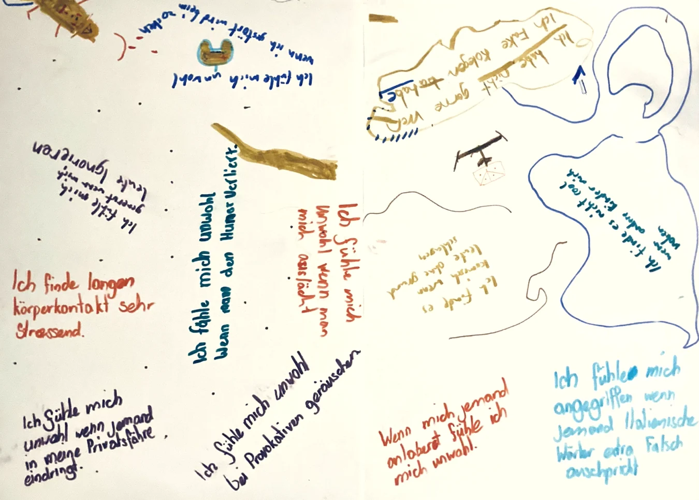
03 / Kinderliteratur
Ich schreibe Theaterstücke für Kinder und Jugendliche sowie Kinderromane. Im Herzen der Abenteuer stehen die eigene Identität und Integrativität.
Seit 2014 verfasse ich Theaterstücke, die sich mit sozial- und gesellschaftspolitischen Themen auseinandersetzen und auf die Bühne finden.
Über Geschichten ins Gespräch kommen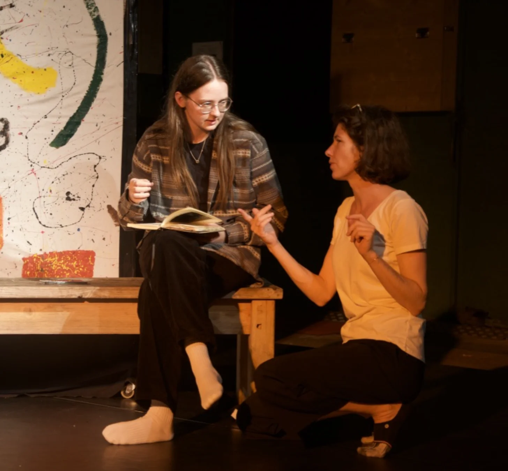
04 / Über mich
Ich bin Theaterpädagogin und Autorin. Ich leite Theaterprojekte und performative Vermittlung für Spieler:innen aller Altersgruppen.
Meine Arbeit verbindet Theater, Pädagogik und die Lust, gemeinsam neue Perspektiven zu entdecken.
Mehr über michKontakt / Eine Idee beginnt im Gespräch.